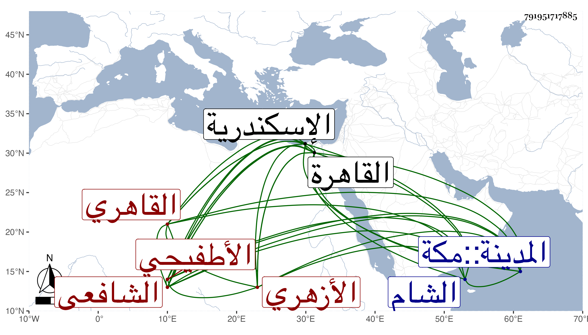

0902Sakhawi.DawLamic.ITO20230111-ara1.EIS1600.791951717885
Biography ID: 791951717885
682
أحمد بن يعقوب بن أحمد بن عبد المنعم بن أحمد الشهاب أبو العباس ابن الشرف الأطفيحي ثم القاهري الأزهري الشافعي ويعرف بابن يعقوب . ولد في سنة تسعين وسبعمائة بالقاهرة ونشأ بها فحفظ القرآن وعدة كتب عرضها على البلقيني ونحوه ومن محفوظاته تقريب الأسانيد للزين العراقي عرضه بتمامه على مؤلفه وحمل عنه شيئا كثيرا من أماليه وغيرها واشتغل يسيرا وكان والده كما سيأتي علامة مقرئا صالحا خيرا فأحسن بربيته وأدبه واكتسب منه دماثة الأخلاق واطراح النفس وأسمعه الكثير عند العراقي والهيثمي والتنوخي وابن أبي المجد وابن الشيخة والحلاوي والسويداوي وابن الهائم ومريم الأذرعية وخلق ، وأجاز له ابن الذهبي وابن العلائي وآخرون من الشام والإسكندرية وغيرهما وتزوج زينب ابنة شيخه العراقي وأولدها عدة وصار مشهورا ببيت العراقي فلما ولي الولي أبو زرعة القضاء باشر عنده النقابة ثم كان نقيبا لشيخنا وفي الآخر باشر معها أمانة الحكم وأوقاف الحرمين وولي عند غيرهما وكان من رجال القاهرة عقلا واحتمالا وتواضعا ومداراة وكرما ومروءة مع الحشمة والرياسة والوضاءة والبشاشة وظرف المحاضرة واستجاب الخواطر وكثرة الصوم والتهجد والتلاوة وزيارة الصالحين والإحسان إلى الفقراء والطلبة والمحبة في الحديث وأهله والإنقياد معهم للأماكن التي تقصد للإسماع فيها وقد حج غير مرة وسافر صحبة شيخنا في الركاب السلطاني إلى البلاد الشامية وحدث سمع منه الأئمة ، أخذت عنه أشياء وكان شيخنا ينبهني في بعض ما أقرأه عليه على مشاركته له فيه ويأمره بالجلوس للإسماع معه فعل ذلك معي مرارا وربما امتنع صاحب الترجمة من الجلوس ويستمر قائما بل سمع منه شيخنا بعض الأحاديث في السفرة المشار إليها وكفى بذلك فخرا لكل منهما ، وتراخت وفاته عن شيخنا فلم يحصل بعده على طائل ومات في ليلة الأحد حادي عشر ربيع الأول سنة ست وخمسين ودفن من الغد في أقصى الصحراء بجوار سيدي عبد الله المنوفي بوصية منه تعد أن صلى عليه الشرف المناوي وكان له مشهد حافل بالقضاة والعلماء والطلبة والصالحين كثير الإنس ، وعظم التأسف لفقده وأطبقوا على حسن الثناء عليه ولقد كان جديرا بذلك ولم يخلف في معناه مثله رحمه الله وإيانا .
